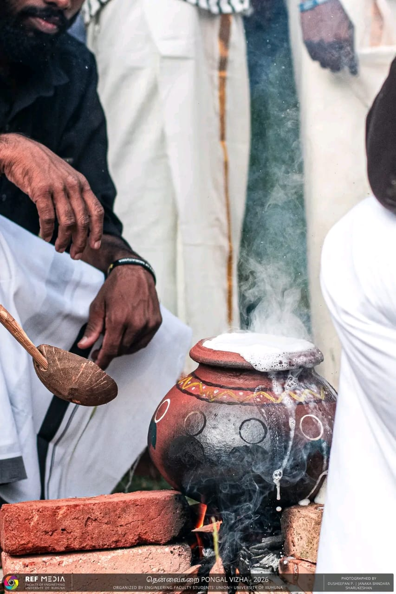
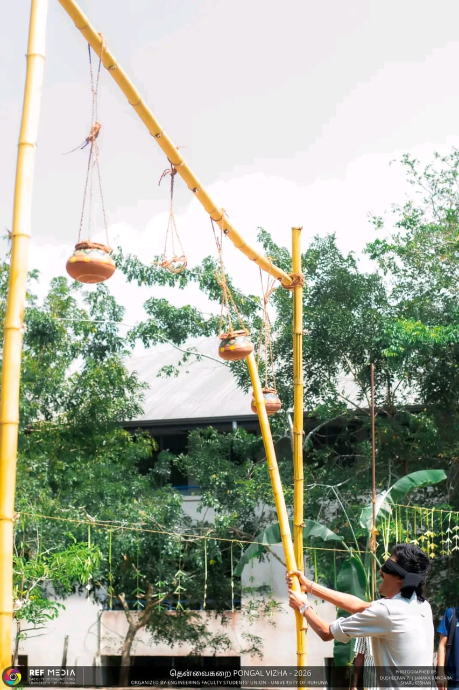

CULTURAL & COMMUNITY EVENTS
Celebrating cultural traditions, customs and togetherness during the Sinhala and Tamil New Year.
Sinhala and Tamil New Year is an important cultural celebration in Sri Lanka. It is a time when people come together to celebrate traditions, enjoy festive activities and share joyful moments.
Moments from the Sinhala and Tamil New Year celebrations.

